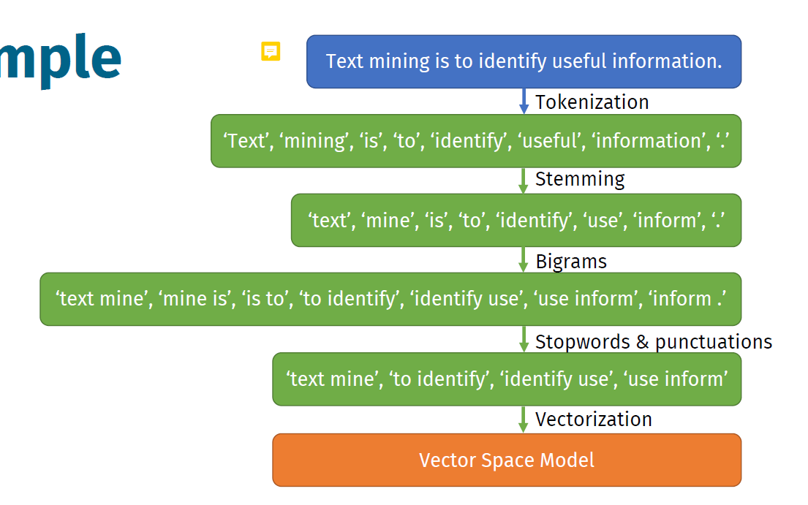
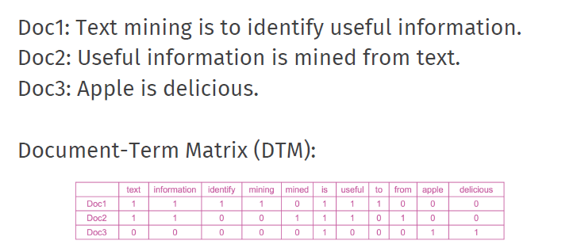
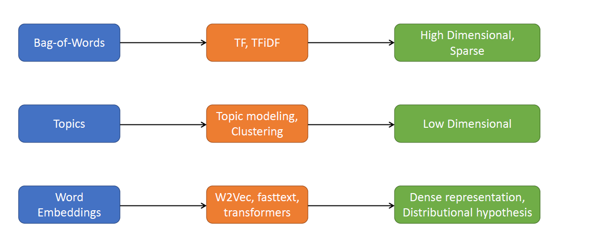
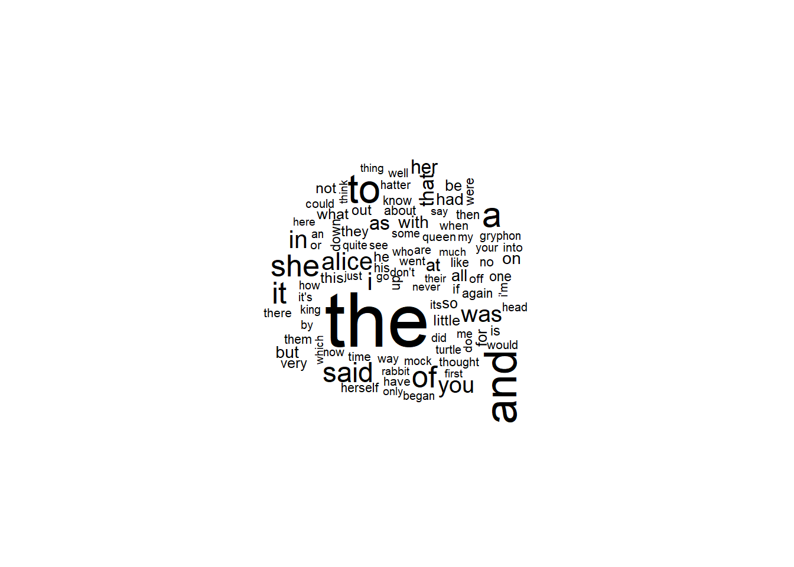
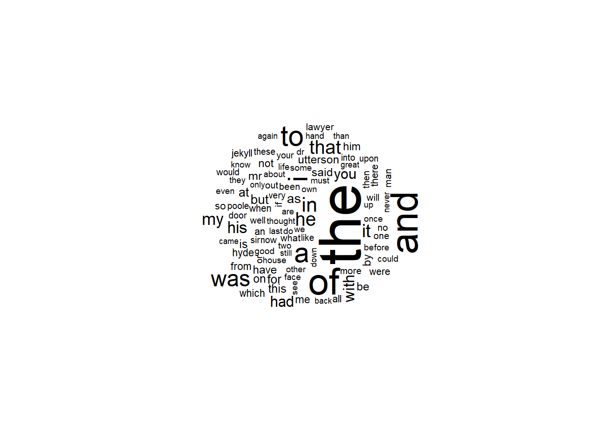
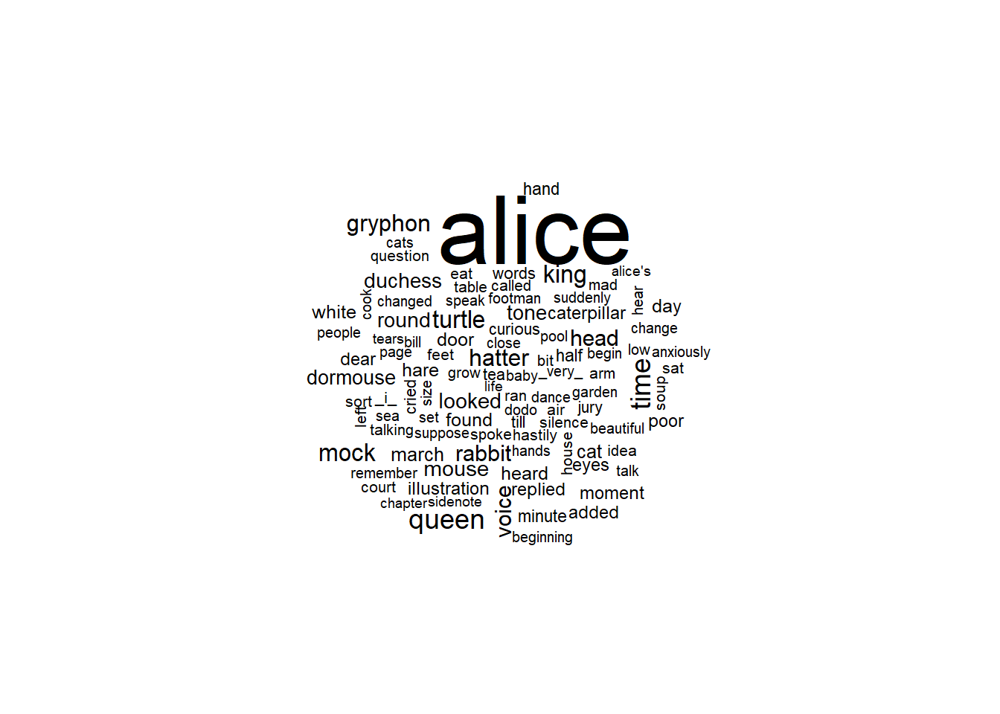

## General Packages
library(tidyverse)
## Text Mining
library(magrittr)
library(tidytext)
library(RColorBrewer)
library(gutenbergr)
library(SnowballC)
library(wordcloud)
library(textdata)
library(tm)
library(NLP)
library(stringi)
library(e1071)
library(rpart)
library(caret)8 Text Mining
8.1 Readings
- Chapter 1: The tidy text format – Chapter 2: Sentiment analysis with tidy data
- Chapter 3: Analyzing word and document frequency: tf-idf
8.2 Introduction
Lecturer: Ayoub Bagheri
What is text mining?
- most popular: “The discovery by computer of }new, previously unknown information}, by automatically extracting information from different written resources” (Hearst 1999)
- Text mining is about looking for patterns in text, in a similar way that data mining can be loosely described as looking for patterns in data.
- Text mining describes a set of linguistic, statistical, and machine learning techniques that model and structure the information content of textual sources (Wikipedia)
Why text mining?
Text data is everywhere, websites (e.g., news), social media (e.g., twitter), databases (e.g., doctors’ notes), digital scans of printed materials, … - A lot of world’s data is in unstructured text format - Applications in industry: search, machine translation, sentiment analysis, question answering, … - Applications in science: cognitive modeling , understanding bias in language, automated systematic literature reviews, …
Examples for text mining:
- Who was the best friend in Friends?
- using text mining instead of hand assignment in the automatic detection of ICD10 codes in cardiology discharge letters
understanding language is difficult!
(at least half of them are an open problem)
- Different things can mean more or less the same ( data science ” vs.statistics
- Context dependency (You have very nice shoes)
- Same words with different meanings (to sanction)
- Lexical ambiguity (we saw her duck)
- Irony, sarcasm (You should swallow disinfectant)
- Figurative language (He has a heart of stone)
- Negation (not good ” vs. good ””), spelling variations, jargon, abbreviations
- All the above is different over languages,99 % of work is on English!
Key problem
- Text, images, videos is unstructured data, not tidy
- unstructured text: information that either does not have a pre defined data model or is not organized in a pre defined manner.
- for our analysis we need tidy data
- each variable is a column, each observation a row, each type of observational unit is a table → table with one-token-per-row
- token is a meaningful unit of text, such as a word, that we are interested in using for analysis
- how is data stored in text mining approaches?
- string, character vectors
- corpus: contain raw string strings annotated with additional meta data and details
- document-term matrix: sparse matrix describing a collection (i.e., a corpus) of documents with one row for each document and one column for each term. The value in the matrix is typically word count or tf-idf. In other words: is a mathematical matrix that describes the frequency of terms that occur in a collection of documents
- → How is it possible to convert this data to structured one?
- answer: tokenization, the process of splitting text into tokens
8.3 Preprocessing data
- approach for cleaning and noise removal of text data
- brings text in analyzable form for statistical learning
- is useful, because:
- efficient
- remove stop words - def: words which are filtered out before or after processing of natural language data (text)
- reduce noise
- is tidy and structured
- dimensionality: words as features in columns
- memory allocation
- increase performance
8.4 typical steps
not all of these are appropriate at all times!
- tokenization Tokenization (“text”, “ming”, “is”, “the”, “best”, “!”)
- stemming (“lungs” to “lung”) or Lemmatization (“were”to “is”)
- def: the process for reducing inflected (or sometimes derived) words to their word stem, base or root form generally a written word form
- lowercasing (“Disease” to “disease”)
- stopword removal (“text mining is best!”)
- punctual removal (“text mining is the best”)
- number removal (“I42” to “I”)
- spell correction (“hart” to “heart”)
Example for steps, one step behind another with a Vector Space Model as a result:

8.5 Vector Space Model
Basic idea: Represent the text as something that makes sense to a computer, makes it readable for the computer
- is a collection of vectors
- represents documents by concept vectors
- each concept defines one dimension (one dimension can be one word)
- k concepts define a high-dimensional space
- element of vector corresponds to concept weight
- terms/ words are genereic features that can be extracted from text
- typically, terms are single words, keywords, n/grams, or phrases
- documents are represented as vectors of terms
- each dimension (concept) corresponds to a separate term
\[ d= (w_1, \dots, w_n) \]
- The process of converting text into numbers is called Vectorization
- Distance between the vectors in this concept space illustrate the relationsship between the documents
8.6 Bag-of-Words
How can we convert words in numerical values? You need a vocabulary that works for all articles, so a binary approach!
- Terms are words (more guenereally we can use n-grams)
- weights are numbers of occurrences of the terms int eh document
- binary
- term frequency (TF)
- term Frequency inverse Document Frequency (TFiDF)
Looking at all words in all articles and give zeros and ones, if the term occur or not:

8.6.1 TFiDF
A term is more discriminative if it occurs a lot but only in fewer documents → shows how often the words occur and how important it is!
- How often? Let \(n_{d,t}\) denote the number of times the t-th term appear in the d-th document
\[ TF_{d,t} = \frac{n_{d,t}}{\sum_{i}n_{d,i}} \]
- how important? Let N denote the number of documents and \(N_t\) denote the number of documents containing the t-th term.
\[ IDF_t = log (\frac{N}{N_t}) \]
When a word appears in all of the documents, it cancelled out by how important that is.
And then weight with TFiDF:
\[ w_{d,t} = TF_{d,t} * IDF_t \]
8.7 Overview of VSM models

overview about the method:
three categories of vector space model
- bag-of-words
We do not care about the order of words, so not about the meaning good to convert to a table high dimensional, high number of zeros (sparse) - topics we expect 10 topics or clusters use these topics as vectors
- word embeddings we care about the order and the meaning
8.8 Text classification
- supervised learning: learning a function that maps an input to an output based on example input-output pairs
- infer function from labeled training data
- use inferred function to label new instances
- common: human experts annotate a set of text data as a training set
hand-coded rules
- rules based on combinations of words or other features
- accuracy can be high if rules are carefully defined by experts
- data/domain specific
8.9 Algorithms
- Naïve Bayes
- Logistic regression
- Support vector machines
- K nearest neighbors
- Neural networks
- Deep learning
8.10 Word represenation
- how can we represent the meaning of words?
Words as vectors:
capture semantics:
similar words should be close to each other in the vector space
relation between two vectors should reflect the relationship between the two words
be efficient, because smaller number of vectors and dimensions
be interpretable
8.11 in R
## libraries
library(tidytext)
library(RColorBrewer)
library(gutenbergr)
library(SnowballC)
library(wordcloud)
library(textdata)
library(tm)
library(NLP)
library(stringi)
library(e1071)
library(rpart)
library(caret)
## Preprocessing tidy data apporoach
#each line get a number and each chapter reference a number, too in the book Alice in Wonderland
tidy_AAIWL <- AAIWL %>%
mutate(linenumber = row_number(),
chapter = cumsum(str_detect(text, regex("^chapter [\\divxlc]",
ignore_case = TRUE))))
## Tokenization, un-nesting Text
#each word in the column text gets is own row
tidy_AAIWL <- tidy_AAIWL %>% unnest_tokens(word, text)
#count the words
#from most used descending
tidy_AAIWL.count <- tidy_AAIWL %>% count(word, sort=TRUE)
#remove stopwords
data("stop_words")
tidy_AAIWL.stop <- tidy_AAIWL %>% anti_join(stop_words)
#create a word cloud out of it
tidy_AAIWL.count %>% with(wordcloud(word, n, max.words = 100))
#Vector Space Model
#set the seed to make your partition reproducible
set.seed(123)
df_final$Content <- iconv(df_final$Content, from = "UTF-8", to = "ASCII", sub = "")
#for documenttermmatrix we need a corpus format, a list ot content and the meta data
docs <- Corpus(VectorSource(df_final$Content))
## alter the code from here onwards
dtm <- DocumentTermMatrix(docs,
control = list(stopwords= TRUE,
removeNumbers=TRUE,
removePunctuation=TRUE,
whitespace_tokenizer=TRUE,
tolower=TRUE)) #lower case
view(dtm)
#in the rows are the entries, in the columns the frequency of a word
## we are not interested in all the words, we are only interested in words that are more ofte used than 10 times
not.freq <- findFreqTerms(dtm, lowfreq=11)
#run again
dtm <- DocumentTermMatrix(docs,
control = list(stopwords= TRUE,
removeNumbers=TRUE,
removePunctuation=TRUE,
whitespace_tokenizer=TRUE,
tolower=TRUE,
dictionary = not.freq)) #lower case
## define the training partition
train_index <- createDataPartition(df_final$Category, p = .8, #category because outcome variable
list = FALSE,
times = 1)
## split the data using the training partition to obtain training data
df_train <- df_final[train_index,]
## remainder of the split is the validation and test data (still) combined
df_test <- df_final[-train_index,]
df_train$Content <- iconv(df_train$Content, from = "UTF-8", to = "ASCII", sub = "")
df_test$Content <- iconv(df_test$Content, from = "UTF-8", to = "ASCII", sub = "")
docs_train <- Corpus(VectorSource(df_train$Category))
docs_test <- Corpus(VectorSource(df_test$Category))
## alter the code from here onwards
dtm_train <- DocumentTermMatrix(docs_train,
control = list(stopwords= TRUE,
removeNumbers=TRUE,
removePunctuation=TRUE,
whitespace_tokenizer=TRUE,
tolower=TRUE,
dictionary= not.freq))
## alter the code from here onwards
dtm_test <- DocumentTermMatrix(docs_test,
control = list(stopwords= TRUE,
removeNumbers=TRUE,
removePunctuation=TRUE,
whitespace_tokenizer=TRUE,
tolower=TRUE,
dictionary= not.freq))
#make a data frame
dtm_train <- as.data.frame(as.matrix(dtm_train))
dtm_test <- as.data.frame(as.matrix(dtm_test))
#now you can run a decision tree on it with
library(rpart)
fit_dt <- rpart(cat~., data = dtm_train, method = 'class')
## prediction on training data
pred_train <- predict(fit_dt, dtm_train, type = 'class')
fit_table <- table(dtm_train$cat, pred_train, dnn = c("Actual", "Predicted"))
fit_table
pred_test <- predict(fit_dt, dtm_test, type = 'class')
fit_table_test <- table(dtm_test$cat, pred_test, dnn = c("Actual", "Predicted"))
fit_table_test
## You can use this table to calculate Accuracy, Sensitivity, Specificity, Pos Pred Value, and Neg Pred Value. There are also many functions available for this purpose, for example the `confusionMatrix` function from the `caret` package.During this practical, we will cover an introduction to text mining. Topics covered are how to pre-process mined text (in both the tidy approach and using the tm package), different ways to visualize this the mined text, creating a document-term matrix and an introduction to one type of analysis you can conduct during text mining: text classification. As a whole, there are multiple ways to analysis mine & analyze text within R. However, for this practical we will discuss some of the techniques covered in the tm package and in the tidytext package, based upon the tidyverse.
You can download the student zip including all needed files for practical 9 here. In addition, for this practical, you will need the following packages:
For the first part of the practical, we will be using text mined through the Gutenberg Project; briefly this project contains over 60,000 freely accessible eBooks, which through the package gutenberger, can be easily accessed and perfect for text mining and analysis.
We will be looking at several books from the late 1800s, in the mindset to compare and contrast the use of language within them. These books include:
- Alice’s Adventures in Wonderland by Lewis Carroll
- The Strange Case of Dr. Jekyll and Mr. Hyde by Robert Louis Stevenson
Despite being from the late 1800s, these books still are popular and hold cultural significance in TV, Movies and the English Language. To access this novel suitable for this practical the following function should be used:
AAIWL <- gutenberg_download(28885) ## 28885 is the eBook number of Alice in Wonderland
SCJH <- gutenberg_download(43) ## 43 is the eBook number of Dr. Jekyll and Mr. HydeAfter having loaded all of these books into your working directory (using the code above), examine one of these books using the View() function. When you view any of these data frames, you will see that these have an extremely messy layout and structure. As a result of this complex structure means that conducting any analysis would be extremely challenging, so pre-processing must be undertaken to get this into a format which is usable.
8.11.1 Pre-Processing Text: Tidy approach
In order for text to be used effectively within statistical processing and analysis; it must be pre-processed so that it can be uniformly examined. Typical steps of pre-processing include:
- Removing numbers
- Converting to lowercase
- Removing stop words
- Removing punctuation
- Stemming
These steps are important as they allow the text to be presented uniformly for analysis (but remember we do not always need all of them); within this practical we will discuss how to undergo some of these steps.
8.11.2 Step 1: Tokenization, un-nesting Text
When we previously looked at this text, as we discovered it was extremely messy with it being attached one line per row in the data frame. As such, it is important to un-nest this text so that it attaches one word per row.
Before un-nesting text, it is useful to make a note of aspects such as the line which text is on, and the chapter each line falls within. This can be important when examining anthologies or making chapter comparisons as this can be specified within the analysis.
In order to specify the line number and chapter of the text, it is possible to use the mutuate function from the dplyr package.
- Apply the code below, which uses the
mutatefunction, to add line numbers and chapter references one of the books. Next, use theView()function to examine how this has changed the structure.
## Template:
tidy_AAIWL <- AAIWL %>%
mutate(linenumber = row_number(),
chapter = cumsum(str_detect(text, regex("^chapter [\\divxlc]",
ignore_case = TRUE))))
tidy_SCJH <- SCJH %>%
mutate(linenumber = row_number(),
chapter = cumsum(str_detect(text, regex("^chapter [\\divxlc]",
ignore_case = TRUE))))`
From this, it is now possible to pass the function unnest_tokens() in order to split apart the sentence string, and apply each word to a new line. When using this function, you simply need to pass the arguments, word (as this is what you want selecting) and text (the name of the column you want to unnest).
The two basic arguments to unnest_tokens used here are column names. First we have the output column name that will be created as the text is unnested into it (word, in this case), and then the input column that the text comes from (text, in this case). Remember that text_df above has a column called text that contains the data of interest.
After using unnest_tokens, we’ve split each row so that there is one token (word) in each row of the new data frame; the default tokenization in unnest_tokens() is for single words, as shown here. Also notice:
Other columns, such as the line number each word came from, are retained. Punctuation has been stripped. By default, unnest_tokens() converts the tokens to lowercase, which makes them easier to compare or combine with other datasets. (Use the to_lower = FALSE argument to turn off this behavior).
- Apply unnest_tokens to your tidied book to unnest this text. Next, once again use the
View()function to examine the output.
Hint: As with Question 1, ensure to use the piping operator (%>%) to easily apply the function.
tidy_AAIWL <- tidy_AAIWL %>% unnest_tokens(word, text)
tidy_SCJH <- tidy_SCJH %>% unnest_tokens(word, text)This results in one word being linked per row of the data frame. The benefit of using the tidytext package in comparison to other text mining packages, is that this automatically applies some of the basic steps to pre-process your text, including removing of capital letters, inter-word punctuation and numbers. However additional pre-processing is required.
8.11.3 Intermezzo: Word clouds
Before continuing the pre-processing process, let’s have a first look at our text by making a simple visualization using word clouds. Typically these word clouds visualize the frequency of words in a text through relating the size of the displayed words to frequency, with the largest words indicating the most common words.
To plot word clouds, we first have to create a data frame containing the word frequencies.
- Create a new data frame, which contains the frequencies of words from the unnested text. To do this, you can make use of the function
count().
Hint: As with Question 1, ensure to use the piping operator (%>%) to easily apply the function.
tidy_AAIWL.count <- tidy_AAIWL %>% count(word, sort=TRUE)
tidy_SCJH.count <- tidy_SCJH %>% count(word, sort=TRUE)- Using the
wordcloud()function, create a word cloud for your book text. Use the argumentmax.wordswithin the function to set the maximum number of words to be displayed in the word cloud.
Hint: As with Question 1, ensure to use the piping operator (%>%) to easily apply the function. Note: Ensure to use the function with(), is used after the piping operator.
tidy_AAIWL.count %>% with(wordcloud(word, n, max.words = 100))
tidy_SCJH.count %>% with(wordcloud(word, n, max.words = 100))
- Discuss with another individual or group, whether you can tell what text each word clouds come from, based on the popular words which occur.
8.11.4 Step 2: Removing stop words
As discussed within the lecture, stop words are words in any language which have little or no meaning, and simply connect the words of importance. Such as the, a, also, as, were… etc. To understand the importance of removing these stop words, we can simply do a comparison between the text which has had them removed and those which have not been.
To remove the stop words, we use the function anti_join(). This function works through un-joining this table based upon the components, which when passed with the argument stop_words, which is a table containing these words across three lexicons. This removes all the stop words from the presented data frame.
- Use the function
anti_join()to remove stop words from your tidied text attaching it to a new data frame.
Hint: As with Question 1, ensure to use the piping operator (%>%) to easily apply the function.
data("stop_words")
tidy_AAIWL.stop <- tidy_AAIWL %>% anti_join(stop_words)Joining with `by = join_by(word)`tidy_SCJH.stop <- tidy_SCJH %>% anti_join(stop_words)Joining with `by = join_by(word)`In order to examine the impact of removing these filler words, we can use the count() function to examine the frequencies of different words. This when sorted, will produce a table of frequencies in descending order. An other option is to redo the wordclouds on the updated data frame containing the word counts of the tidied book text without stop words.
- Use the function
count()to compare the frequencies of words in the dataframes containing the tidied book text with and without stop words (usesort = TRUEwithin thecount()function), or redo the wordclouds. Do you notice a difference in the (top 10) words which most commonly occur in the text?
Hint: As with Question 1, ensure to use the piping operator (%>%) to easily apply the function.
tidy_AAIWL.count <- tidy_AAIWL.stop %>% count(word, sort=TRUE)
tidy_AAIWL.count %>% with(wordcloud(word, n, max.words = 100))
8.12 Vector space model: document-term matrix
In this part of the practical we will build a text classification model for a multiclass classification task. To this end, we first need to perform text preprocessing, then using the idea of vector space model, convert the text data into a document-term (dtm) matrix, and finally train a classifier on the dtm matrix.
The data set used in this part of the practical is the BBC News data set. You can use the provided “news_dataset.rda” for this purpose. This data set consists of 2225 documents from the BBC news website corresponding to stories in five topical areas from 2004 to 2005. These areas are:
- Business
- Entertainment
- Politics
- Sport
- Tech
- Use the code below to load the data set and inspect its first rows.
load("data/news_dataset.rda")
head(df_final) File_Name
1 001.txt
2 002.txt
3 003.txt
4 004.txt
5 005.txt
6 006.txt
Content
1 Ad sales boost Time Warner profit\n\nQuarterly profits at US media giant TimeWarner jumped 76% to $1.13bn (£600m) for the three months to December, from $639m year-earlier.\n\nThe firm, which is now one of the biggest investors in Google, benefited from sales of high-speed internet connections and higher advert sales. TimeWarner said fourth quarter sales rose 2% to $11.1bn from $10.9bn. Its profits were buoyed by one-off gains which offset a profit dip at Warner Bros, and less users for AOL.\n\nTime Warner said on Friday that it now owns 8% of search-engine Google. But its own internet business, AOL, had has mixed fortunes. It lost 464,000 subscribers in the fourth quarter profits were lower than in the preceding three quarters. However, the company said AOL's underlying profit before exceptional items rose 8% on the back of stronger internet advertising revenues. It hopes to increase subscribers by offering the online service free to TimeWarner internet customers and will try to sign up AOL's existing customers for high-speed broadband. TimeWarner also has to restate 2000 and 2003 results following a probe by the US Securities Exchange Commission (SEC), which is close to concluding.\n\nTime Warner's fourth quarter profits were slightly better than analysts' expectations. But its film division saw profits slump 27% to $284m, helped by box-office flops Alexander and Catwoman, a sharp contrast to year-earlier, when the third and final film in the Lord of the Rings trilogy boosted results. For the full-year, TimeWarner posted a profit of $3.36bn, up 27% from its 2003 performance, while revenues grew 6.4% to $42.09bn. "Our financial performance was strong, meeting or exceeding all of our full-year objectives and greatly enhancing our flexibility," chairman and chief executive Richard Parsons said. For 2005, TimeWarner is projecting operating earnings growth of around 5%, and also expects higher revenue and wider profit margins.\n\nTimeWarner is to restate its accounts as part of efforts to resolve an inquiry into AOL by US market regulators. It has already offered to pay $300m to settle charges, in a deal that is under review by the SEC. The company said it was unable to estimate the amount it needed to set aside for legal reserves, which it previously set at $500m. It intends to adjust the way it accounts for a deal with German music publisher Bertelsmann's purchase of a stake in AOL Europe, which it had reported as advertising revenue. It will now book the sale of its stake in AOL Europe as a loss on the value of that stake.
2 Dollar gains on Greenspan speech\n\nThe dollar has hit its highest level against the euro in almost three months after the Federal Reserve head said the US trade deficit is set to stabilise.\n\nAnd Alan Greenspan highlighted the US government's willingness to curb spending and rising household savings as factors which may help to reduce it. In late trading in New York, the dollar reached $1.2871 against the euro, from $1.2974 on Thursday. Market concerns about the deficit has hit the greenback in recent months. On Friday, Federal Reserve chairman Mr Greenspan's speech in London ahead of the meeting of G7 finance ministers sent the dollar higher after it had earlier tumbled on the back of worse-than-expected US jobs data. "I think the chairman's taking a much more sanguine view on the current account deficit than he's taken for some time," said Robert Sinche, head of currency strategy at Bank of America in New York. "He's taking a longer-term view, laying out a set of conditions under which the current account deficit can improve this year and next."\n\nWorries about the deficit concerns about China do, however, remain. China's currency remains pegged to the dollar and the US currency's sharp falls in recent months have therefore made Chinese export prices highly competitive. But calls for a shift in Beijing's policy have fallen on deaf ears, despite recent comments in a major Chinese newspaper that the "time is ripe" for a loosening of the peg. The G7 meeting is thought unlikely to produce any meaningful movement in Chinese policy. In the meantime, the US Federal Reserve's decision on 2 February to boost interest rates by a quarter of a point - the sixth such move in as many months - has opened up a differential with European rates. The half-point window, some believe, could be enough to keep US assets looking more attractive, and could help prop up the dollar. The recent falls have partly been the result of big budget deficits, as well as the US's yawning current account gap, both of which need to be funded by the buying of US bonds and assets by foreign firms and governments. The White House will announce its budget on Monday, and many commentators believe the deficit will remain at close to half a trillion dollars.
3 Yukos unit buyer faces loan claim\n\nThe owners of embattled Russian oil giant Yukos are to ask the buyer of its former production unit to pay back a $900m (£479m) loan.\n\nState-owned Rosneft bought the Yugansk unit for $9.3bn in a sale forced by Russia to part settle a $27.5bn tax claim against Yukos. Yukos' owner Menatep Group says it will ask Rosneft to repay a loan that Yugansk had secured on its assets. Rosneft already faces a similar $540m repayment demand from foreign banks. Legal experts said Rosneft's purchase of Yugansk would include such obligations. "The pledged assets are with Rosneft, so it will have to pay real money to the creditors to avoid seizure of Yugansk assets," said Moscow-based US lawyer Jamie Firestone, who is not connected to the case. Menatep Group's managing director Tim Osborne told the Reuters news agency: "If they default, we will fight them where the rule of law exists under the international arbitration clauses of the credit."\n\nRosneft officials were unavailable for comment. But the company has said it intends to take action against Menatep to recover some of the tax claims and debts owed by Yugansk. Yukos had filed for bankruptcy protection in a US court in an attempt to prevent the forced sale of its main production arm. The sale went ahead in December and Yugansk was sold to a little-known shell company which in turn was bought by Rosneft. Yukos claims its downfall was punishment for the political ambitions of its founder Mikhail Khodorkovsky and has vowed to sue any participant in the sale.
4 High fuel prices hit BA's profits\n\nBritish Airways has blamed high fuel prices for a 40% drop in profits.\n\nReporting its results for the three months to 31 December 2004, the airline made a pre-tax profit of £75m ($141m) compared with £125m a year earlier. Rod Eddington, BA's chief executive, said the results were "respectable" in a third quarter when fuel costs rose by £106m or 47.3%. BA's profits were still better than market expectation of £59m, and it expects a rise in full-year revenues.\n\nTo help offset the increased price of aviation fuel, BA last year introduced a fuel surcharge for passengers.\n\nIn October, it increased this from £6 to £10 one-way for all long-haul flights, while the short-haul surcharge was raised from £2.50 to £4 a leg. Yet aviation analyst Mike Powell of Dresdner Kleinwort Wasserstein says BA's estimated annual surcharge revenues - £160m - will still be way short of its additional fuel costs - a predicted extra £250m. Turnover for the quarter was up 4.3% to £1.97bn, further benefiting from a rise in cargo revenue. Looking ahead to its full year results to March 2005, BA warned that yields - average revenues per passenger - were expected to decline as it continues to lower prices in the face of competition from low-cost carriers. However, it said sales would be better than previously forecast. "For the year to March 2005, the total revenue outlook is slightly better than previous guidance with a 3% to 3.5% improvement anticipated," BA chairman Martin Broughton said. BA had previously forecast a 2% to 3% rise in full-year revenue.\n\nIt also reported on Friday that passenger numbers rose 8.1% in January. Aviation analyst Nick Van den Brul of BNP Paribas described BA's latest quarterly results as "pretty modest". "It is quite good on the revenue side and it shows the impact of fuel surcharges and a positive cargo development, however, operating margins down and cost impact of fuel are very strong," he said. Since the 11 September 2001 attacks in the United States, BA has cut 13,000 jobs as part of a major cost-cutting drive. "Our focus remains on reducing controllable costs and debt whilst continuing to invest in our products," Mr Eddington said. "For example, we have taken delivery of six Airbus A321 aircraft and next month we will start further improvements to our Club World flat beds." BA's shares closed up four pence at 274.5 pence.
5 Pernod takeover talk lifts Domecq\n\nShares in UK drinks and food firm Allied Domecq have risen on speculation that it could be the target of a takeover by France's Pernod Ricard.\n\nReports in the Wall Street Journal and the Financial Times suggested that the French spirits firm is considering a bid, but has yet to contact its target. Allied Domecq shares in London rose 4% by 1200 GMT, while Pernod shares in Paris slipped 1.2%. Pernod said it was seeking acquisitions but refused to comment on specifics.\n\nPernod's last major purchase was a third of US giant Seagram in 2000, the move which propelled it into the global top three of drinks firms. The other two-thirds of Seagram was bought by market leader Diageo. In terms of market value, Pernod - at 7.5bn euros ($9.7bn) - is about 9% smaller than Allied Domecq, which has a capitalisation of £5.7bn ($10.7bn; 8.2bn euros). Last year Pernod tried to buy Glenmorangie, one of Scotland's premier whisky firms, but lost out to luxury goods firm LVMH. Pernod is home to brands including Chivas Regal Scotch whisky, Havana Club rum and Jacob's Creek wine. Allied Domecq's big names include Malibu rum, Courvoisier brandy, Stolichnaya vodka and Ballantine's whisky - as well as snack food chains such as Dunkin' Donuts and Baskin-Robbins ice cream. The WSJ said that the two were ripe for consolidation, having each dealt with problematic parts of their portfolio. Pernod has reduced the debt it took on to fund the Seagram purchase to just 1.8bn euros, while Allied has improved the performance of its fast-food chains.
6 Japan narrowly escapes recession\n\nJapan's economy teetered on the brink of a technical recession in the three months to September, figures show.\n\nRevised figures indicated growth of just 0.1% - and a similar-sized contraction in the previous quarter. On an annual basis, the data suggests annual growth of just 0.2%, suggesting a much more hesitant recovery than had previously been thought. A common technical definition of a recession is two successive quarters of negative growth.\n\nThe government was keen to play down the worrying implications of the data. "I maintain the view that Japan's economy remains in a minor adjustment phase in an upward climb, and we will monitor developments carefully," said economy minister Heizo Takenaka. But in the face of the strengthening yen making exports less competitive and indications of weakening economic conditions ahead, observers were less sanguine. "It's painting a picture of a recovery... much patchier than previously thought," said Paul Sheard, economist at Lehman Brothers in Tokyo. Improvements in the job market apparently have yet to feed through to domestic demand, with private consumption up just 0.2% in the third quarter.
Category Complete_Filename
1 business 001.txt-business
2 business 002.txt-business
3 business 003.txt-business
4 business 004.txt-business
5 business 005.txt-business
6 business 006.txt-business- Find out about the name of the categories and the number of observations in each of them.
t_category <- table(df_final$Category)t_name <- table(df_final$File_Name)- Convert the data set into a document-term matrix using the function
DocumentTermMatrix()and subsequently use thefindFreqTerms()function to keep the terms which their frequency is larger than 10. A start of the code is given below. It is also a good idea to apply some text preprocessing, for this inspect thecontrolargument of the functionDocumentTermMatrix()(e.g., convert the words into lowercase, remove punctuations, numbers, stopwords, and whitespaces).
### set the seed to make your partition reproducible
set.seed(123)
df_final$Content <- iconv(df_final$Content, from = "UTF-8", to = "ASCII", sub = "")
docs <- Corpus(VectorSource(df_final$Content)) #for documenttermmatrix we need a corpus format, a list ot content and the meta data
## alter the code from here onwards
dtm <- DocumentTermMatrix(docs,
control = list(stopwords= TRUE,
removeNumbers=TRUE,
removePunctuation=TRUE,
whitespace_tokenizer=TRUE,
tolower=TRUE)) #lower case
#in the rows are the entries, in the columns the frequency of a wordnot.freq <- findFreqTerms(dtm, lowfreq=11) ## we are not interested in all the words, we are only interested in words that are used more than 10 times
dtm <- DocumentTermMatrix(docs,
control = list(stopwords= TRUE,
removeNumbers=TRUE,
removePunctuation=TRUE,
whitespace_tokenizer=TRUE,
tolower=TRUE,
dictionary = not.freq)) #lower case- Partition the original data into training and test sets with 80% for training and 20% for test.
## define the training partition
train_index <- createDataPartition(df_final$Category, p = .8, #category because outcome variable
list = FALSE,
times = 1)
## split the data using the training partition to obtain training data
df_train <- df_final[train_index,]
## remainder of the split is the validation and test data (still) combined
df_test <- df_final[-train_index,]- Create separate document-term matrices for the training and the test sets using the previous frequent terms as the input dictionary and convert them into data frames.
df_train$Content <- iconv(df_train$Content, from = "UTF-8", to = "ASCII", sub = "")
df_test$Content <- iconv(df_test$Content, from = "UTF-8", to = "ASCII", sub = "")
docs_train <- Corpus(VectorSource(df_train$Category))
docs_test <- Corpus(VectorSource(df_test$Category))
## alter the code from here onwards
dtm_train <- DocumentTermMatrix(docs_train,
control = list(stopwords= TRUE,
removeNumbers=TRUE,
removePunctuation=TRUE,
whitespace_tokenizer=TRUE,
tolower=TRUE,
dictionary= not.freq))
## alter the code from here onwards
dtm_test <- DocumentTermMatrix(docs_test,
control = list(stopwords= TRUE,
removeNumbers=TRUE,
removePunctuation=TRUE,
whitespace_tokenizer=TRUE,
tolower=TRUE,
dictionary= not.freq))
#make a data frame
dtm_train <- as.data.frame(as.matrix(dtm_train))
dtm_test <- as.data.frame(as.matrix(dtm_test))- Use the
cbindfunction to add the categories to the train_dtm data and name the column y.
y <- df_train$Category
dtm_train <- cbind(dtm_train,y)
table(dtm_train[5,6216])
business
1